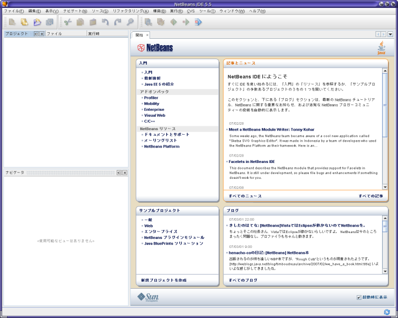

JavaOne Tokyo Hands on Lab :
Project Looking Glass (LG3D) Basic Programming
NetBeansのセットアップ
NetBeans のインストールが終了したら、
次に LG3D でプログラミングを行うための準備を行います。
準備の内容は「LG3D用のコンパイラ環境の登録」と
「LG3D APIの登録」です。
NetBeansの起動
NetBeansの起動を行います。
端末エミュレータ上で次のコマンドを実行します。
# /opt/netbeans-5.5/bin/netbeans
|
コマンドを実行すると NetBeans 5.5 の起動画面が表示されます。
しばらく待つとIDEが起動します。

Platform Manager
Platform Manager はJDK環境を管理しています。
ここでは、システム標準の JDK とは別に
あらかじめインストールしておいたLG3D専用のJDK(Java3D)環境を登録します。
登録手順は次のようになります。
- NetBeansのメニューから
「ツール」 →
「Java プラットフォームマネージャ」を選択します。
- Javaプラットフォームマネージャダイアログが表示されるので、
「プラットフォームを追加」をクリックします。
- ファイラが表示されるのでJDKのフォルダ(ディレクトリ)を選択します。
ここでは/home/duke/lg3d/usr/share/lg3d-jdkとなります。
Windowsの場合、C:\Program Files\Java\jdk1.6.0を指定します。
JDKのディレクトリを選択後「次へ」をクリックします。
- プラットフォーム名の確認が出ますので適宜変更します。
ここでは「 JDK 1.6.0 with Java3D 」とします。
プラットフォーム名を入力後「完了」を押します。
- Javaプラットフォームマネージャに追加されていることを確認し、ウィンドウを閉じます。
Library Manager
Library Manager は外部のAPI(ライブラリ)の管理を行うためのツールです。
ここでは、LG3Dプログラミングを行うために lg3d-core.jar(lg3d-coreのAPI群)
を登録します。
登録手順は次の通りです。
- NetBeansのメニューから
「ツール」 →
「ライブラリマネージャ」を選択します。
- ライブラリマネージャダイアログが表示されますので、
「新規ライブラリ」を選択します。
- 新規ライブラリダイアログが表示されるのでライブラリ名を入力します。
ここではlg3d-coreにします。
また、ライブラリの種類を「クラスライブラリ」にします。
入力後「了解」をクリックします。
- ライブラリマネージャダイアログに「lg3d-core」があることを確認し、
それを選択します。
右側が「クラスライブラリ」となっていることを確認し、
「JAR/フォルダの追加」を選択します。
- ファイラが表示されるので、LG3Dをインストールしたディレクトリ(/home/duke/lg3d/usr/share/lg3d/lib/)に移動します。
lg3d-core.jarを選択し、
「JAR/フォルダの追加」をクリックします。
- ライブラリマネージャにJARファイルが追加されたことを確認します。
確認後、「Javadoc」を選択して、
クラスパスの表示からJavadocの表示に切替えます。
- 「ZIP/フォルダを追加する」をクリックします。
- LG3DのAPIドキュメント(/home/duke/java-docs/api)
を選択し、
「ZIP/フォルダを追加」をクリックします。
Javadocの場所については「LG3Dのインストール ( Solaris 10 x86編 )」の後半にある「Javadoc のインストール」 を参考してください。
- Javadocにフォルダ(ディレクトリ)が登録されたことを確認します。
確認後、「了解」をクリックします。
補足:
/home/duke/java-docs/scenemanager-api に含まれる内容は
LG3Dのシステムレベルの開発
(シーンマネジャの開発)で用います。
通常のLG3Dアプリケーションの開発では使わないので
登録する必要はありません。
メニューに戻る